The Lion and Sun Revolution
In the summer of 2018, the atmosphere in Iran was full of panic. The currency was crashing, and people were terrified of losing everything they had saved. To "fix" the problem, the regime started selling gold coins to the public, telling everyone it was a safe way to protect their money. But it turned out to be a trap. The regime used these sales to collect all the cash from the people, money they needed to keep their regional proxies and terrorist groups running. Once they had the money, they changed the rules. They started arresting people who had bought large amounts of gold, calling them "economic traitors" and even executing some of them. They basically sold the gold, took the cash, and then used the law to snatch the gold back. It was a strange, scary moment where doing exactly what the government told you to do could get you killed.
From late 2019 to early 2020, the IRGC demonstrated that its primary goal was the survival of its own power and narrative, rather than the safety of the Iranian people. This became clear in November 2019 during "Bloody Aban". When the government suddenly raised gasoline prices and people protested, the IRGC didn't see citizens in need; they saw a threat to their control. They shut down the internet to hide the truth from the world and then treated Iranian cities like enemy territory. They used snipers on rooftops and machine guns from helicopters to kill their own people at random, including a brutal massacre in the Mahshahr marshes. For the IRGC, the estimated 1,500 lives lost were simply the cost of maintaining their grip on the country. This same focus on their own narrative continued in January 2020. After the U.S. killed Qasem Soleimani, the IRGC used his funeral as a massive propaganda tool to project an image of national strength, even while the blood from the November killings was still fresh. When they fired two missiles at Flight PS752 just after its takeoff from Tehran, their first instinct was not to help the victims, but to protect the organization's reputation. They spent three days lying to the world, claiming a technical failure and bulldozing the crash site to destroy evidence. Once again, the IRGC chose their narrative over human life, using the same military weapons they claim are for "national defense" to silence the grieving families and citizens who dared to demand the truth.
The brutal crackdowns of Bloody Aban and the lies surrounding Flight PS752, broke the "wall of fear" and the "wall of hope." Before 2019, some still hoped for gradual reform. After the IRGC showed it was willing to kill more then 1,500 people in a week and bulldoze a crash site filled with its own citizens, that hope died. The public realized the IRGC prioritizes its own survival above all else. This created a new, younger generation of protesters who felt they had nothing left to lose.
The path to the Woman, Life, Freedom (Zan, Zendegi, Azadi) movement was paved by decades of incremental defiance that eventually met the explosive trauma of the years we just discussed. By the time the movement erupted in September 2022, the Iranian public was no longer just protesting specific policies; they were reacting to a systemic history of violence and a total loss of trust in the state.
While the 2019 and 2020 massacres were turning points for the general population, Iranian women had been engaged in a specific, daily confrontation with the state since 1979. Movements like the "White Wednesdays" and the "Girls of Enghelab Street" saw women standing on utility boxes, waving their headscarves on sticks. These weren't just protests against a piece of clothing; they were direct challenges to the IRGC’s ideological control over the female body. Each arrest by the "Morality Police" added to a collective bank of resentment that was waiting for a spark.
In September 2022, the killing of Mahsa Jina Amini, a 22-year-old Kurdish woman, in the custody of the Morality Police, became the symbol of every grievance mentioned so far. When the protests began, the slogan "Woman, Life, Freedom" resonated because it addressed the root of the IRGC’s power. "Woman" challenged the gender-based apartheid; "Life" countered the "culture of death" and martyrdom promoted by the IRGC; and "Freedom" demanded an end to the military's grip on the country. Unlike previous protests that were triggered by prices or specific events, this movement was a total rejection of the regime's identity. The people who saw helicopters firing on them in 2019 and the families who saw their loved ones killed in the sky in 2020 joined the youth in the streets. They were no longer asking for cheaper gas or an apology, they were demanding the end of the system that had caused so much blood to be spilled.
The transition from the "Woman, Life, Freedom" protests to the current "Lion and Sun Revolution" reflects a significant shift in the Iranians consciousness and identity. This evolution shows a public that is moving beyond protesting specific laws toward a full-scale reclamation of national identity. What began as economic frustration in 2018 and 2019 has transformed into a revolutionary movement. The people are no longer asking the Islamic Republic to change its behavior; they are demanding its total removal. The brutal history we briefly discussed, the snipers in 2019, the missiles hitting PS752 in 2020, and the killing of Mahsa Amini in 2022, has convinced the overwhelming majority of the population that the regime is incapable of reform.
The "Lion and Sun" (Shir-o-Khorshid) flag has become the primary symbol of this revolution. For the Iranians, this flag represents a history that pre-dates the 1979 events. It is used as a direct counter-narrative to the IRGC’s religious ideology, signaling a desire for a "normal," secular, and nationalist country. By waving this flag, the people are essentially saying that the current regime is an occupying force and that the true Iran lies in its pre-Islamic and pre-1979 roots. The result is a push for a secular government that prioritizes "Iran" over the "Ummah" (the global Islamic community) and the IRGC's regional ambitions. The chanting for the Shah is, at its core, a call for the return of a state that functions for the benefit of its citizens rather than for the survival of a specific religious narrative.
Let's now talk about facts
The IRGC’s Use of Civilians as Human Shields
The Islamic Revolutionary Guard Corps (IRGC) has increasingly relied on a strategy of using the Iranian population as "human shields" to protect its military assets and personnel from external threats. Investigations have revealed a nationwide pattern of moving weapons and equipment into over 70 civilian sites, including public spaces and residential hubs, to deter airstrikes through the threat of collateral damage.
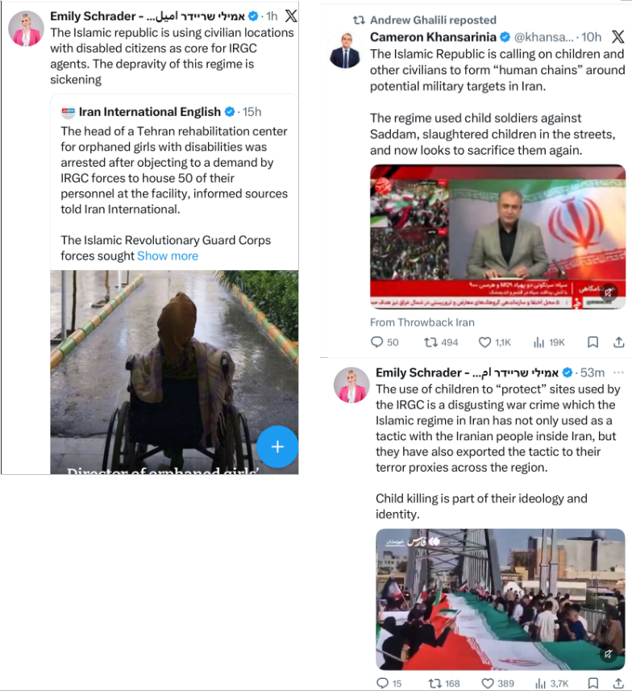
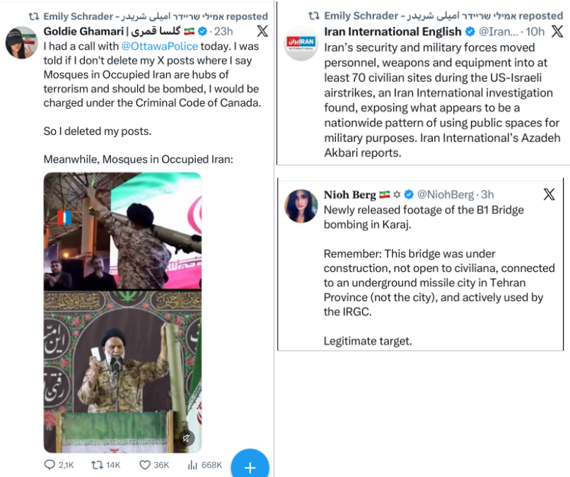
The Digital Siege and the Fight for Truth from Inside Iran
Inside Iran, the regime maintains its control through a total "digital siege," where internet access is systematically restricted to prevent the world from seeing the reality on the ground. Recent accounts from within the country describe a landscape where only 1% of the population has internet access, and much of that is reserved for regime agents using "white SIM cards" to flood social media with state propaganda. The few brave citizens who manage to connect via Starlink or complex configurations act as a "fragile window" to the outside world, tirelessly documenting atrocities and debunking edited videos while facing the crushing weight of state-sponsored disinformation. This struggle is not just local; activists are calling on the international community, particularly Europe and the UK, to stop enabling the regime's financial and diplomatic networks. They argue that by allowing money-laundering hubs and diplomatic missions to remain, Western nations are not only complicit in the suppression of the Iranian people but are also ignoring a direct threat to their own national security.
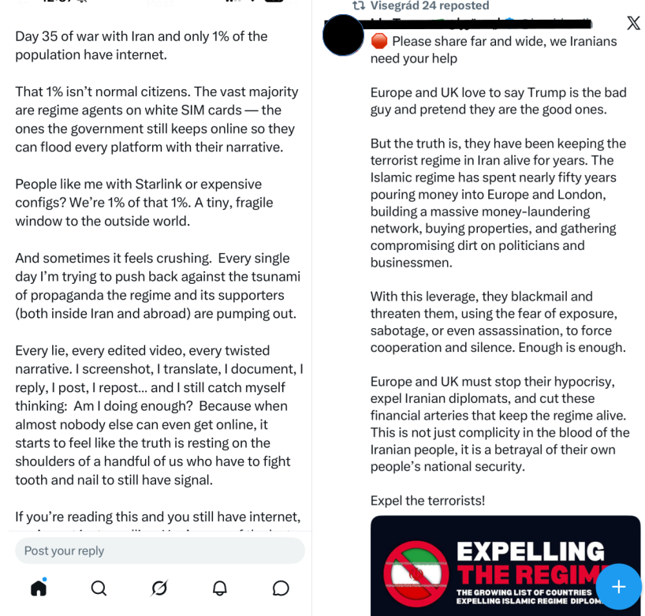
Israel’s Targeted Warnings Amidst State-Led Disinformation
Contrary to the narrative of Israel's indiscriminate oppression, recent events highlight a strategic effort from Israel to protect Iranian lives during military operations targeting regime infrastructure. During strikes on railway lines, which the IRGC often uses for military logistics, Israel issued direct warnings to Iranian civilians via recorded calls to train station managers and public alerts. These warnings were specifically designed to fill the void left by the regime’s month-long internet blackout, ensuring that innocent passengers were evacuated before infrastructure was neutralized. This approach stands in stark contrast to the rhetoric of regional actors like Pakistan’s leadership, whose hostile diatribes against Israel often mask their own lack of impartiality and their role in complicating diplomatic efforts. By providing these "windows of safety," Israel strategy focuses on dismantling the IRGC’s military capabilities while actively working to bypass the regime's attempts to use its own citizens as collateral.
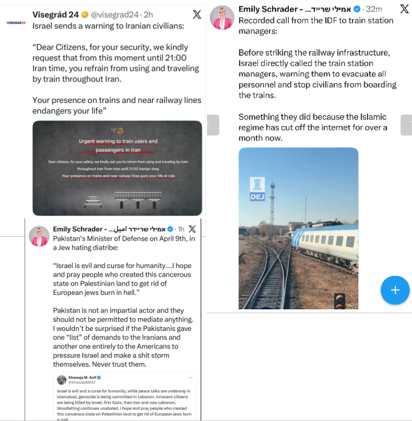
Crimes Against Humanity and the Collapse of Institutional Sanity
The current state of the "Lion and Sun Revolution" in 2026 has reached a level of brutality that transcends political suppression and enters the realm of systemic war crimes. As the regime faces unprecedented internal pressure, it has turned medical facilities into sites of horror, with reports of security forces shooting protesters inside hospitals and committing acts of sexual violence against nurses who provide aid. Beyond physical violence, the IRGC has co-opted pharmaceutical companies and research centers like the Pasteur Institute to conduct chemical weapons research, further weaponizing the country’s health infrastructure. This domestic terror is mirrored by a staggering spike in state-sanctioned killings; in the first three months of 2026 alone, the regime carried out 657 executions, aiming to surpass the record-breaking slaughter of 2025.
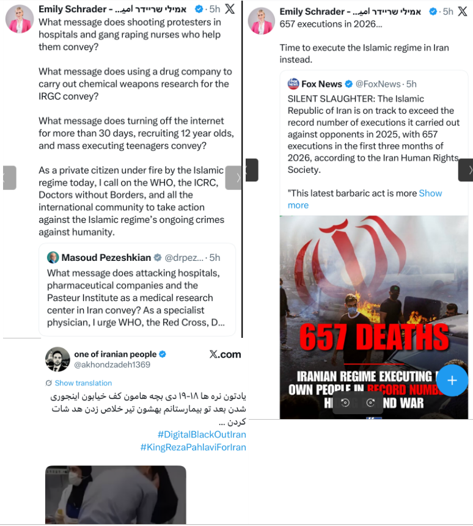
The Final Break: Civil Defiance and Global Complicity
Despite the total digital blackout and the regime's efforts to flood the internet with pro-government narratives via "privileged" access, the Iranian people are engaging in direct physical defiance. In cities like Dehdasht, civilians have reportedly taken the extraordinary risk of blocking roads to prevent IRGC forces from reaching downed U.S. pilots, signaling that the population now views foreign interventionists more favorably than their own "occupying" military. Meanwhile, the regime has transitioned its diplomatic missions into incitement hubs, calling on overseas supporters to sacrifice their lives in a global campaign of terrorism against the West. This desperate mobilization of child soldiers and the continued "headshot" executions of teenagers in the streets underscores the reality that the Islamic Republic is no longer governing a nation, but is fighting an all-out war against the Iranian people's existence.
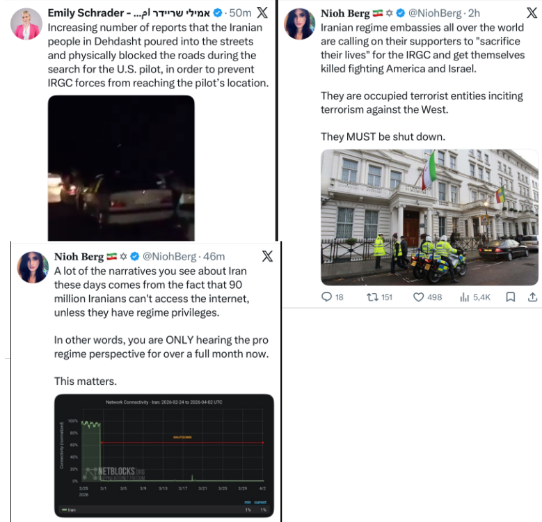
The Global Reach of the IRGC Propaganda and Infiltration Machine
The Islamic Republic’s survival depends as much on psychological warfare as it does on physical force, utilizing a sophisticated propaganda machine that operates both domestically and internationally. Behind the scenes, leaked footage has exposed regime actors and "swallows" (intelligence assets) professionally staging scenes in war ruins to manipulate global perception and frame the regime as a victim of external aggression. This deceptive narrative is often amplified by mainstream Western media outlets, which critics argue sometimes mirror the IRGC's editorial board by focusing on political critiques of Western leaders while ignoring the regime's recruitment of 12-year-old child soldiers and its systematic execution of teenage protesters. The regime’s influence is not limited to the Middle East; it has spent decades building a "soft power" infrastructure within the United States and Europe. Reports from organizations like NUFDI reveal a long-term strategy of using nonprofits, mosques, and community organizations, often funded by institutions like the Fifth Avenue-based Alavi Foundation, to shape American narratives in plain sight. This network allows the regime to conduct subversion under the guise of activism, leading to instances where American institutions host vigils for figures like Khamenei. By funding a web of affiliated groups, the Islamic Republic has successfully embedded its narrative into Western academic and social circles, effectively laundering its ideology and silencing opposition through a coordinated effort that activists describe as a direct betrayal of national security and democratic values.
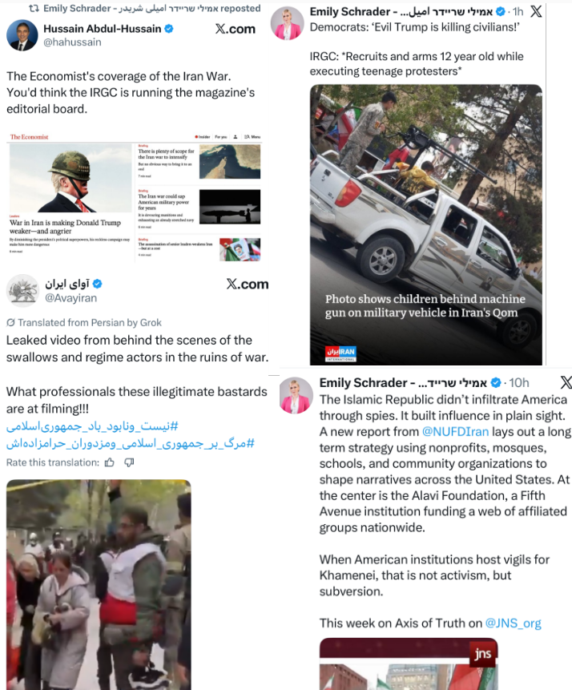
China’s Role as the IRGC’s Industrial Backbone
As U.S. and Israeli forces work to degrade the IRGC’s repressive capabilities, China has positioned itself as the primary architect of Iranian military reconstitution. Western intelligence reports indicate that Beijing is actively helping Iran rebuild its missile program by shipping critical fuel precursors and air defense systems, often undermining strikes on research and industrial facilities. This support extends into the digital and orbital domains; the Iranian military reportedly utilized Chinese spy satellites to gain new capabilities for targeting U.S. bases across the Middle East. Furthermore, China provides a diplomatic and logistical shield for the "shadow economy" that fuels the IRGC, even as the regime mobilizes foreign militias, such as the Popular Mobilization Forces (PMF), through border crossings like Shalamcheh to maintain control over domestic protest hotspots.
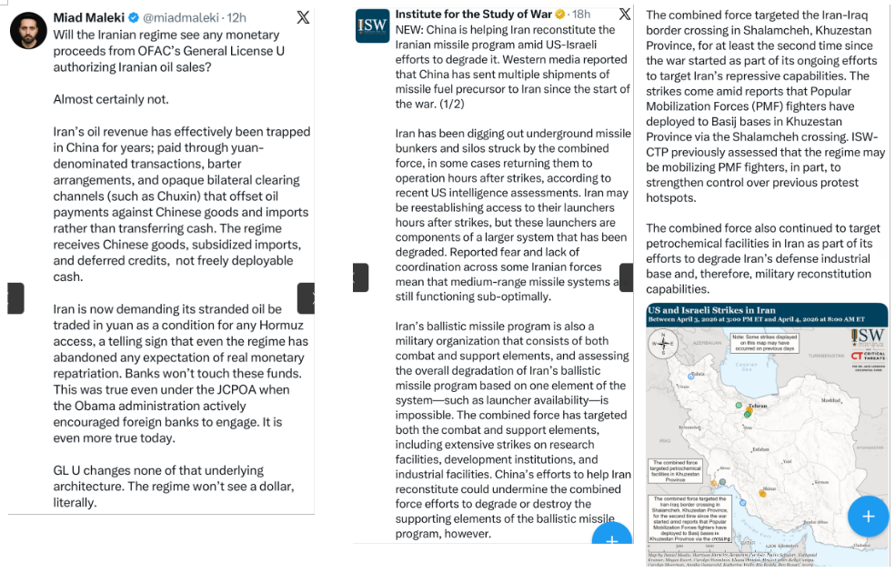
Global Subversion and the Strategic Trap
The alliance between Beijing and Tehran also manifests in a "smokeless war" of global influence and subversion. A network of pro-communist groups, funded by China-linked interests, has been activated within the West to fly the Iranian flag and promote narratives that frame the regime’s survival as a failure of Western policy. While China publicly positions itself as a "stabilizing force" to attract global leaders and regional partners, its actual strategy appears aimed at drawing the United States deeper into a prolonged Middle Eastern conflict. By supplying weapons and intelligence while providing diplomatic cover, China ensures the Islamic Republic remains a functional proxy, utilizing the Iranian people’s suffering as leverage to distract and exhaust its global competitors.
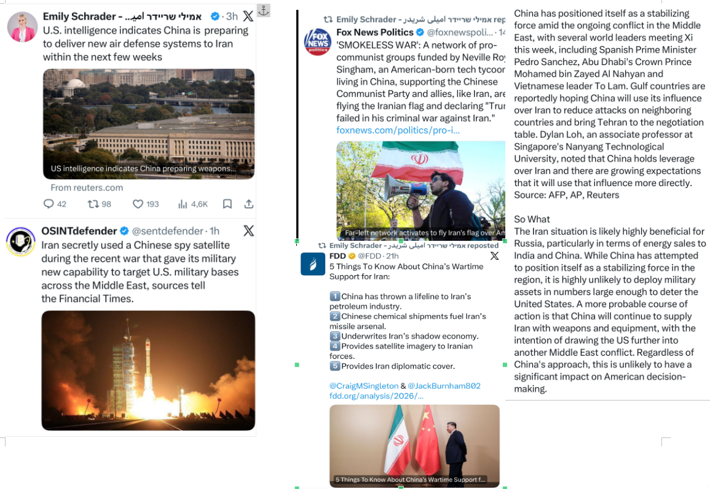
The Triple Squeeze: Chinese Exploitation, Diplomatic Deceit, and Domestic Terror
The Islamic Republic’s current survival strategy has devolved into a cycle of external dependency and internal brutality. Economically, the regime is trapped in a "monetary cage" by China, where oil revenues are laundered through opaque yuan-denominated barter systems that provide the IRGC with subsidized goods rather than deployable cash. To mask this loss of sovereignty, the regime employs "negotiation through manipulation," frequently spreading disinformation about the release of frozen U.S. assets to project a false image of diplomatic strength to its remaining domestic base. However, the true weight of the regime's desperation is felt by the Iranian people; as the IRGC faces total isolation, it has criminalized basic connectivity, treating the use of Starlink or VPNs as capital offenses. Executing its own citizens for seeking information while simultaneously being exploited by its sole superpower patron, the regime has effectively become an occupying force that prioritizes its own narrative over the very survival of the nation.
The 'UAExit' and the Collapse of Regional Cartels
In a historic move effective May 1, 2026, the United Arab Emirates officially withdrew from OPEC and OPEC+, a decision described by regional analysts as "UAExit." This withdrawal is a direct strike against the Islamic Republic, which has long benefited from the price-fixing and production limits set by the cartel. By exiting OPEC, the UAE, the third-largest producer in the group, effectively breaks the cartel's grip on global oil prices, unlocking an additional one million barrels of oil per day. Leveraging the Fujairah pipeline to bypass the volatile waterway, the UAE is flooding the market with an additional one million barrels per day precisely as U.S. naval interdictions have stripped the Iranian regime of $500 million in daily trade revenue. This move not only stabilizes global prices but also renders the Islamic Republic’s "Hormuz Toll" obsolete, transitioning the regional power balance from one of energy blackmail to one of technological and logistical dominance. The UAE’s departure from both OPEC and the Arab League signals the birth of a new regional alignment centered on progress, AI, and security rather than ideological or religious solidarity. UAE leadership has explicitly stated that bilateral relations with nations like the United States, Israel, Italy, and South Korea have provided more protection against Iranian aggression than traditional Arab alliances ever did. This shift is rooted in a fundamental rejection of the "culture of destruction" promoted by the Islamic Republic. As the IRGC continues to funnel its resources into missiles, drones, and terror proxies, failing to build a single street with the billions in assets previously released to them, the UAE is positioning itself as a global leader in technology and innovation, choosing a future defined by order and civilization over the chaos exported by the regime in Tehran.
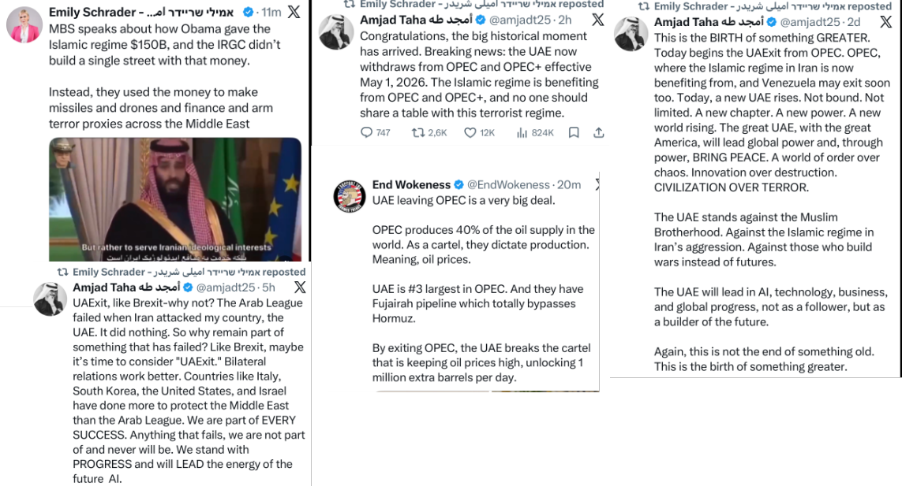
The Sánchez Schism: European Complicity and the ICC Complaint
While the vast majority of Europe doesn't move a finger to isolate the Islamic Republic, Spain’s far-left socialist government under Prime Minister Pedro Sánchez has gone well beyond actively blocking U.S. operations by refusing the use of jointly operated military bases and closing Spanish airspace to aircraft involved in the Iran conflict. This "anti-Western" pivot has not gone unnoticed by the regime; the Spanish flag was recently seen flying at pro-Islamic regime demonstrations in Tehran as a gesture of appreciation for Sánchez’s opposition to U.S. and Israeli policies. The consequences of this policy have also moved beyond diplomatic friction and into the realm of international law. A war crimes complaint has been filed at the International Criminal Court (ICC) in The Hague against Prime Minister Sánchez by the organization Shurat HaDin. The complaint alleges that Spain has indirectly supported Tehran’s military efforts, including the suppression of the Lion and Sun revolution, through the supply of dual-use components that fuel the IRGC’s repressive and military technology. By positioning himself as a leader of a "pro-Islamist socialist revival" in Europe, Sánchez is increasingly viewed not as a neutral mediator, but as a logistical enabler of a regime currently under investigation for mass executions and crimes against humanity.
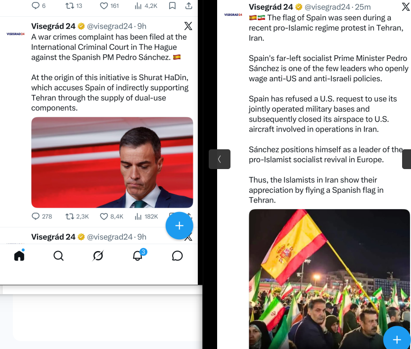